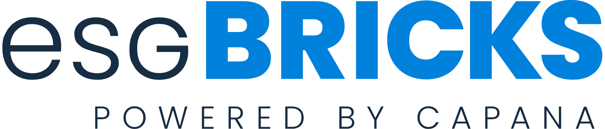

Med en blomst fra os
Hej By-Expressen,
Vi kom forbi på cykel, for hvordan ellers? Vi har valgt jer, fordi I allerede gør det, en ESG-rapport handler om. I fragter byens varer uden udledning, og I er ejet af medarbejderne. Det fortjener at blive dokumenteret.
Holdet bag esgBRICKS
100 % emissionsfriLevering på ladcykel
MedarbejderejetUafhængig og ejet af holdet
Grønt bindeledMellem byens virksomheder og kunder
Kom i gang
Sig ja til jeres gratis rapport
Ring, skriv eller scan koden, så finder vi et tidspunkt og går i gang med jeres første rapport.
Webwww.esgbricks.com
Mailmads.frost@capana.dk
Telefon+45 20 87 02 11

Scan og book et tidspunkt
esgBRICKS, powered by Capana

Til By-Expressen
I kører grønt.
Lad os vise det i tal.
Hver levering på ladcykel er en tur, der ikke blev kørt i varebil. En ESG-rapport gør forskellen målbar for jer og for jeres kunder.
Gratisførste
rapport
rapport
ESG-rapport · By-Expressen
- CO₂e sparet i forhold til varebil
- Medarbejderejerskab og arbejdsmiljø
- Udviklingen år for år